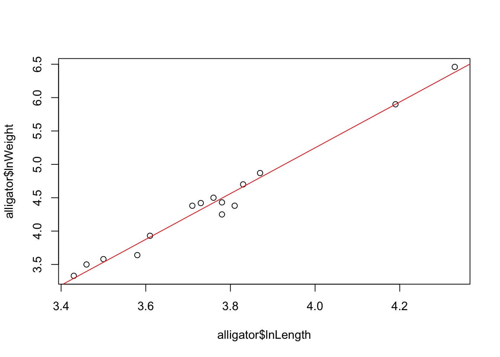

stats packageThe t.test function produces a variety of t-tests.
Unlike most statistical packages, the default assumes unequal variance
of the two samples, however we can override this with the
var.equal argument.
# independent 2-sample t-test assuming equal variances and a pooled variance estimate
t.test(x,y,var.equal=TRUE)# independent 2-sample t-test unequal variance and the Welsh df modification.
t.test(x,y)
t.test(x,y,var.equal=FALSE)You can use the alternative="less" or
alternative="greater" options to specify a one-sided
test.
A paired-sample \(t\)-test is
obtained from the same function by specifying paired=TRUE
and ensuring both samples are the same size:
# paired t-test
t.test(x,y,paired=TRUE) Finally, a one-sample \(t\)-test can
be performed to test the population mean \(\mu\) of the sample against a specific
value by supplying only a single sample and a value for
mu:
# one sample t-test
t.test(y,mu=3) # Ho: mu=3R Help: t.test
The nonparametric tests for comparing two samples can be performed in
much the same way, only this time we use the wilcox.test
function.
# independent 2-group Mann-Whitney U Test
wilcox.test(y,x) # where y and x are numeric# paired 2-group Signed Rank Test
wilcox.test(y1,y2,paired=TRUE) # where y1 and y2 are numericR Help: wilcox.test
lmLinear models can be fitted by the method of least squares in R using
the function lm. Suppose our response variable is \(y\), and we have a predictor variable \(x\) and we want to \(y\) as a linear function of \(x\), we can use lm to do
this:
model <- lm(y ~ x)Alternatively, if we have a data frame called dataset
with columns a and b then we could fit the
linear regression of a on b without having to
extract the columns by using the data argument
model <- lm(a ~ b, data=dataset)The function lm fits a linear model to data and we
specify the model using a ‘formula’ where the response variable is on
the left hand side separated by a ~ from the explanatory
variable(s). The formula provides a flexible way to specify various
different functional forms for the relationship. The data argument is
used to tell R where to look for the variables used in the formula.
Note: The ~ (tilde) symbol should be interpreted
as ‘is modelled as’.
For example, consider the data below from a study in central Florida where 15 alligators were captured and two measurements were made on each of the alligators. The weight (in pounds) was recorded with the snout vent length (in inches – this is the distance between the back of the head to the end of the nose). The data were analysed the data on the log scale (natural logarithms), and the goal is to determine whether there is a linear relationship between the variables:
alligator = data.frame(
lnLength = c(3.87, 3.61, 4.33, 3.43, 3.81, 3.83, 3.46, 3.76,
3.50, 3.58, 4.19, 3.78, 3.71, 3.73, 3.78),
lnWeight = c(4.87, 3.93, 6.46, 3.33, 4.38, 4.70, 3.50, 4.50,
3.58, 3.64, 5.90, 4.43, 4.38, 4.42, 4.25)
)
model <- lm(lnWeight~lnLength,data=alligator)Inspecting the fitted regression lm object shows us a
summary of the estimated model parameters:
model##
## Call:
## lm(formula = lnWeight ~ lnLength, data = alligator)
##
## Coefficients:
## (Intercept) lnLength
## -8.476 3.431We can also add a fitted regression line to a plot by simply passing
the fitted model to abline:
plot(y=alligator$lnWeight, x=alligator$lnLength)
abline(model,col='red')
R Help: lm
The summary function in R is a multi-purpose function
that can be used to describe an R object. It can be applied to vectors,
matrices, data frames, linear models (lm objects), anova
decompositions and many other R objects. Applying summary to our
lm object via summary(model) will give a
summary of many key elements of the regrssion:
summary(model)##
## Call:
## lm(formula = lnWeight ~ lnLength, data = alligator)
##
## Residuals:
## Min 1Q Median 3Q Max
## -0.24348 -0.03186 0.03740 0.07727 0.12669
##
## Coefficients:
## Estimate Std. Error t value Pr(>|t|)
## (Intercept) -8.4761 0.5007 -16.93 3.08e-10 ***
## lnLength 3.4311 0.1330 25.80 1.49e-12 ***
## ---
## Signif. codes: 0 '***' 0.001 '**' 0.01 '*' 0.05 '.' 0.1 ' ' 1
##
## Residual standard error: 0.1229 on 13 degrees of freedom
## Multiple R-squared: 0.9808, Adjusted R-squared: 0.9794
## F-statistic: 665.8 on 1 and 13 DF, p-value: 1.495e-12There is a lot of information in this output, but the key quantities are:
summary statistics of the residuals from the regression.
Note that the mean of the residuals is always 0 and so is omitted.(Intercept), indicating that the first row of the table
contains information about the fitted intercept. Subsequent rows will be
named after the other explanatory variables in the model forumula after
the ~Estimate column gives the least squares estimates
of the coefficients.Std. Error column gives the corresponding standard
error for each coefficient.t value column contains the \(t\) test statistics for a test of the
hypothesis \(H_0: \beta_i=0\) against
\(H_0: \beta_i\neq 0\), for each
coefficient \(\beta_i\).Pr(>|t|) column is then the \(p\)-value associated with that each test,
where a low p-value indicates that we have evidence to reject the null
hypothesis that the estimate is different from 0 (with the significance
levels given by the number of stars).R Help: summary
R also has a number of functions that, when applied to the results of a linear regression, will return key quantities such as residuals and fitted values.
coef(model) and coefficicents(model) –
returns the estimated model coefficients as a vector \((\widehat{\beta}_0,\widehat{\beta}_0)\)fitted(model) and fitted.values(model) –
returns the vector of fitted values, \(\widehat{y}_i=\widehat{\beta}_0+\widehat{\beta}_0x_i\)resid(model) and residuals(model) –
returns the vector of residual values, \(e_i=y_i-\widehat{y}\)confint(model, level=0.95) – CIs for model
parameterspredict(model, x, level=0.95) – predictions for the
location of the SLR line, or for \(y\)
at some new value x.We can also extract the individual elements from the summary output
from a regression analysis. Suppose we save the results of a call to the
summary function of a lm object as summ. By
using the $ we can extract even more valuable information
from the components of the regression summary:
summ$residuals – extracts the regression residuals as
resid abovesumm$coefficients – returns the \(p \times 4\) coefficient summary table with
columns for the estimated coefficient, its standard error, t-statistic
and corresponding (two-sided) p-value.summ$sigma – the regression standard errorsumm$r.squared, summ$adj.r.squared – the
regression \(R^2\) and adjusted \(R^2\) respectivelysumm$cov.unscaled – the \(p\times p\) (co)variance matrix for the
least squares coefficients. The diagonal elements comprise the estimates
of the variances for each of the \(p\)
coefficients, and the off-diagonals give the estimated covariances
between each pair of coefficients.The following commands are for future reference and show the syntax of how to create linear models with multiple predictors, models with quadratic (or higher power) terms, and models with interaction terms.
## multiple regression involving 2 predictors
model1 <- lm(y ~ x1 + x2, data=myData)
## quadratic regression on x1. Note each higher order term must be
## enclosed within the I() function
model2 <- lm(y ~ x1 + I(x1^2), data=myData)
## multiple regression with interaction
model3 <- lm(y ~ x1 + x2 + x1:x2, data=myData)
## more concise way of expressing model3
model3a <- lm(y ~ x1*x2, data=myData) R Help: lm, formula for more details on specifying a regression.